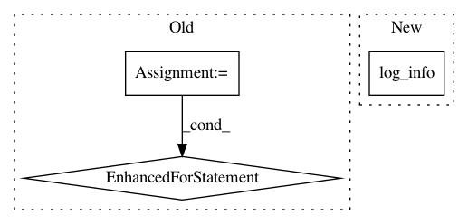

222491435716cc587bde288964d65061847ecfc1,dataset/research/workers.py,PipelineWorker,run_job,#PipelineWorker#,47
Before Change
if pipeline["preproc"] is not None:
job.parallel_execute_for(name)
else:
for experiment, config, repetition in zip(
job.experiments,
job.config["configs"],
job.config["repetition"]
):
if pipeline["run"]:
self.log_info(
"Task {}, iteration {}: run pipeline {}"
.format(i, j, name), filename=self.logfile
)
experiment.run(name)
experiment.put_result(j, name)
experiment.post_run(name)
else:
experiment.next_batch(name)
experiment.put_result(j, name)
if j in pipeline["dump_for"]:
self.log_info("Task {}, iteration {}: dump results for {}..."
.format(i, j, name), filename=self.logfile)
for item, config, repetition in zip(
After Change
for item in job.experiments:
item.call_function(j, name)
if j in function["dump_for"]:
self.log_info("Task {}, iteration {}: dump results for function {}..."
.format(i, j, name), filename=self.logfile)
for item in job.experiments:
item._dump_function_result(name, "."+name)
except StopIteration:
self.log_info("Task {} was stopped after {} iterations".format(i, j+1), filename=self.logfile)
In pattern: SUPERPATTERN
Frequency: 3
Non-data size: 3
Instances
Project Name: analysiscenter/batchflow
Commit Name: 222491435716cc587bde288964d65061847ecfc1
Time: 2018-05-04
Author: a.kozhevin@analysiscenter.ru
File Name: dataset/research/workers.py
Class Name: PipelineWorker
Method Name: run_job
Project Name: UFAL-DSG/tgen
Commit Name: a3c24e5e3222592a0c4e002ac47e3b7e048327d1
Time: 2014-03-26
Author: odusek@ufal.mff.cuni.cz
File Name: tgen/tgen_random.py
Class Name:
Method Name:
Project Name: analysiscenter/batchflow
Commit Name: 6ada8256999d2231fc061e78f02fb492bacf63eb
Time: 2018-02-27
Author: a.kozhevin@analysiscenter.ru
File Name: dataset/research/workers.py
Class Name: PipelineWorker
Method Name: run_task